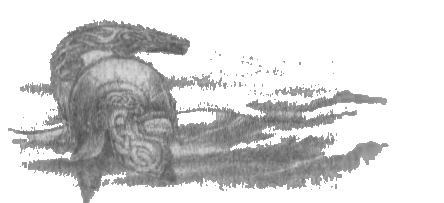

8
Sonraki günlerde Beleg çetenin iyiliği için çok çabaladı. Yaralananlar ve hastalananlarla ilgilendi ve hepsi çabucak iyileşti. Çünkü o günlerde Gri Elfler hâlâ âli bir halktı, büyük güç sahibiydiler ve yaşam ve tüm canlı varlıklar konusunda bilgeydiler; ve el sanatları ve ilim konusunda Valinor sürgünlerinden daha düşük olsalar da, insanların erişemeyeceği pek çok sanatları vardı. Dahası, Okçu Beleg Doriath halkı arasında büyüktü; güçlü ve dayanıklıydı ve gözleri kadar fikirleri de ileri görüşlüydü ve gerektiğinde savaşta yiğitti, yalnızca uzun yayının hızlı oklarına değil, aynı zamanda büyük kılıcı Anglachel’e de güvenirdi. Ve, daha önce belirtildiği gibi, tüm elflerden nefret eden ve Túrin’in Beleg’e beslediği sevgiye kıskançlıkla bakan Mîm’in yüreğindeki nefret büyüdükçe büyüdü.
Kış geçip canlanma ve bahar geldiğinde, haydutların yapacak daha haşin işleri oldu. Morgoth’un güçleri hareket halindeydi; ve el yordamı ile ilerleyen bir elin uzun parmakları gibi, ordularının öncüleri Beleriand yollarını yokluyordu.
Morgoth’un öğütlerini şimdi kim bilebilir? Eskiden, Yüce Şarkı’nın Ainur’u arasında kudretli Melkor olan ve şimdi kuzeydeki karanlık tahtta karanlık bir efendi olarak oturan, ona casuslar ya da hainler aracılığı ile gelen bütün haberleri kötücüllüğü içinde ölçüp biçen, zihninin gözleri ile gören ve düşmanlarının amaçlan ve hedeflerini, Kraliçe Melian dışında, aralarındaki en bilge kişilerin korktuğundan da iyi anlayan onun düşüncelerinin nerelere uzanabildiğim kim ölçebilir?
Dolayısıyla, bu sene Morgoth’un kötülüğü, Sirion’un batısındaki, hâlâ ona karşı çıkacak güç barındıran topraklara dönmüştü. Gondolin hâlâ dayanıyordu, ama orası saklıydı. Doriath’ı biliyordu, ama henüz giremiyordu. Daha ötede, yolunu hiçbir hizmetkarının bulamadığı Nargothrond uzanıyordu ve onlar için korkulacak bir isimdi; orada Finrod’un halkı, saklı bir güçle yaşıyordu. Ve güneyden uzak diyarlardan, Nimbrethil’in beyaz huş koruluklarının ötesinden, Arvernien kıyısından ve Sirion’un ağızlarının ötesinden, Gemilerin Limanlarına dair söylentiler geldi. Başka her şey düşmeden, Morgoth oraya ulaşamazdı.
Bu yüzden, artık orklar kuzey’den daha da büyük sayılarda iniyordu. Anach’tan geçtiler ve Dimbar’ı ele geçirdiler ve Doriath’ın bütün kuzey bataklıklarını istila ettiler. Sirion’un uzun, dar geçidinden geçen kadim yoldan geldiler, Finrod’un Minas Tirith’inin yükseldiği adanın yanından geçtiler ve böylece Malduin ile Sirion arasındaki toprakları aşıp, Brethil’in saçaklarından Teiglin Geçitlerine geldiler. Eski yol oradan Saklı Ova’ya geçiyordu ve sonra, Amon Rûdh’un gözetlediği yaylaların eteklerinden Narog Vadisi’ne iniyor, sonunda Nargothrond’a varıyordu. Ama orklar o yolda henüz fazla ilerlememişti; çünkü şimdi orada, yabanda, gizli bir dehşet yaşıyordu ve kızıl tepenin üzerinde henüz bilmedikleri dikkatli gözler vardı.
O bahar, Túrin Hador’un Miğferi’ni taktı ve Beleg memnun oldu. Başta, çetelerinde elliden az adam vardı, ama Beleg’in ormancılık becerisi ve Túrin’in yiğitliği sayesinde düşmanlarına ordu gibi geliyorlardı. Orkların keşif kolları avlanıyor, kampları izleniyordu ve dar bir yerde kuvvetle yürümek üzere toplanacak olurlarsa, kayaların arasından ya da ağaçların gölgesinden Ejder-miğferi ve onun uzun boylu, haşin adamları fırlıyordu. Kısa süre sonra, tepelerden onun borusunun sesini duyan kumandanlar sinmeye, daha hiç ok tınlamadan ya da kılıç çekilmeden orklar kaçmaya başlar olmuştu.
Mîm Amon Rûdh’daki gizli barınağını Túrin ve yoldaşlarına teslim ettiğinde, oğlunu öldüren oku fırlatan kişinin yayını ve oklarını kırmasını ve Khîm’in ayaklarının dibine bırakmasını talep ettiği anlatılmıştı; ve o adam Andróg’du. Sonra Andróg, büyük hınçla, Mîm’in istediği şeyi yapmıştı. Dahası, Mîm Andróg’un bir daha asla yay ve ok taşımaması gerektiğini söylemişti ve bunu bir daha yaparsa, kendi ölümünün de aynı şekilde olması için beddua okumuştu.
O senenin baharında Andróg Mîm’in bedduasına meydan okudu ve Bar-en-Danwedh’den yaptıkları bir akında eline yay aldı; ve o akında zehirli bir ork oku ona isabet etti ve Andróg acı içinde, ölüm döşeğinde geri getirildi. Ama Beleg yarasını iyileştirdi. Ve Mîm’in Beleg’e beslediği nefret daha da büyüdü, çünkü bedduasını bozmuştu; ama, “Tekrar ısıracak,” dedi.
O sene, Dimbar’da düştüğü sanılan Yay ve Miğfer’in, her tür umudun ötesinde yine yükseldiği söylentisi Beleriand’ın dört köşesinde, ormanların altında ve derelerin üstünde, tepelerin arasındaki geçitlerde yayıldı. Bunun üzerine, savaş, yenilgi ve ıssız toprakların kalıntısı olan, öndersiz ve sahipsiz, ama yılmamış elfler ve insanlar yine yüreklendiler ve henüz kimse kalelerinin yerini bilmiyor olsa da, iki kumandanı aramaya gittiler. Túrin ona gelen herkesi memnunlukla karşıladı, ama Beleg’in öğütlerini dinleyerek, yeni gelenleri Amon Rûdh’daki (artık Echad i Sedryn, yani Sadıkların Kampı adı verilmişti) sığınağına almadı; oraya giden yolu yalnızca Eski Çete’den olanlar biliyordu ve başka kimse kabul edilmiyordu. Ama çevrede başka korunaklı kamplar ve hisarlar kurulmuştu: doğudaki ormanda, yaylalarda, güneye doğru uzanan bataklıklarda, Teiglin Geçitlerinin güneyindeki Methed-en-glad’dan (Ormanın Sonu) Amon Rhúdh’un birkaç fersah güneyindeki Bar-erib’e uzanan, Narog ile Sirion Bataklıkları arasındaki, eskiden bereketli olan topraklarda. Adamlar bu yerlerin hepsinden Amon Rûdh’un zirvesini görebiliyorlardı ve işaretler aracılığı ile haberleri ve emirleri alabiliyorlardı.
Bu şekilde, yaz sona ermeden, Túrin’i izleyenler artarak büyük bir güce dönüştüler ve Angband’ın gücü geri püskürtüldü. Bunun haberi Nargothrond’a kadar geldi ve oradaki pek çok kişi huzursuzlandı, bir haydut düşmana bu kadar zarar verebiliyorsa, Narog’un Beyi’nin neler yapabileceğinden bahsetmeye başladılar. Ama Nargothrond Kralı Orodreth fikrini değiştirmiyordu. Her konuda Thingol’u takip ediyordu, onunla gizli yollardan haberleşiyordu; ve o, en başta kendi halkını ve Kuzey’in açgözlülüğüne karşı onların hayatlarını ve servetlerini ne süreyle koruyabileceğini düşünenlerin bilgeliğine göre, bilge bir efendiydi. Bu yüzden halkından kimsenin Túrin’e gitmesine izin vermedi ve ona haber yollayarak, verdiği savaşta her ne yaparsa yapsın, her ne tasarlarsa tasarlasın, Nargothrond topraklarına ayak basmaması, orkları da oraya sürmemesi gerektiğini bildirdi. Ama iki kumandana, ihtiyaç duyarlarsa, silah dışında yardım önerdi (bu konuda da Thingol ve Melian’dan etkilendiğini düşünüyordu).
Sonra Morgoth elini sakladı; sık sık yanıltma saldırıları yaptı, ki kolay zaferler kazanarak bu asiler kendilerinden fazla emin hissetsinler. Gerçekten de öyle oldu. Çünkü Túrin şimdi, Teiglin ile Doriath’ın batı bataklığı arasındaki tüm topraklara Dor-Cúarthol adını vermişti; ve o toprakların beyi olduğunu ilan ederek, Gorthol, Dehşet miğfer adını almıştı; ve cesareti yerindeydi. Ama artık Beleg’e, Miğfer Túrin’i umduğundan farklı şekilde etkilemiş gibi geliyordu; ve gelecek günlere baktığı zaman tedirgin oluyordu.
Yaz ilerlerken, bir gün o ve Túrin Echad’da oturmuş, uzun bir çatışma ve yürüyüşten sonra dinleniyorlardı. Túrin Beleg’e şöyle dedi: “Neden üzüntülü ve düşüncelisin? Sen bana döndüğünden beri her şey yolunda gitmiyor mu? Kararım iyi çıkmadı mı?”
“Şimdilik her şey iyi,” dedi Beleg. “Düşmanlarımız hâlâ şaşkın ve korku içinde. Ve hâlâ bizi güzel günler bekliyor —bir müddet için.”
“Ya sonra?” dedi Túrin.
“Kış,” dedi Beleg. “Ve bundan sonra, yaşayıp da görebilecekler için, bir başka sene.”
“Peki, ya sonra?”
“Angband’ın gazabı. Kara El’in parmak uçlarını yaktık —o kadar. Geri çekilmeyecektir.”
“Ama amacımız ve sevincimiz Angband’ın gazabı değil mi?” dedi Túrin. “Ne yapmamı tercih ederdin?”
“Bunu çok iyi biliyorsun,” dedi Beleg. “O yolda konuşmamı yasaklamıştın. Lâkin, artık beni dinle. Bir kralın ya da büyük bir ordunun beyinin pek çok ihtiyacı vardır. Güvenli bir sığınağı olması gerekir; ve bir serveti, savaşla alakası bulunmayan pek çok adamı olmalıdır. Kalabalıkla birlikte aş ihtiyacı da gelir, yabanın avcılara verebileceğinden daha fazlası hem de. Ardından, gizli gizli gelip gitme ihtiyacı gelir. Amon Rûdh az kişi için makul bir yer —gözleri ve kulakları var. Lâkin, yalnız başına duruyor ve uzaklardan görülebiliyor; ve onu kuşatmak için büyük bir güç gerekmez —onu koruyan, bizimkinin şimdi olduğundan ya da olacağından çok daha muazzam bir ordu kurulmadığı müddetçe.”
“Yine de, ben kendi ordumun kumandanı olacağım,” dedi Túrin; “ve eğer düşersem, düşerim. Burada, Morgoth’un yolunda duruyorum ve ben burada durdukça, o, güney yolunu kullanamaz.”
Sirion’un batısındaki topraklarda Ejder-nıiğferi’nin görüldüğüne dair haber Morgoth’un kulağına hızla gitti ve Morgoth güldü, çünkü uzun zamandır gölgelerde ve Melian’ın perdelerinin arkasında kaybolmuş olan Túrin yine ortaya çıkmıştı. Ama Túrin’in gücünün, ona ettiği laneti boşa çıkaracak kadar büyümesinden, onun için tasarladığı sondan kurtulmasından, ya da Doriath’a çekilip yine ortadan kaybolmasından korkmaya başlamıştı. Bu yüzden, şimdi Túrin’i ele geçirmeyi ve babasına yaptığı gibi yapmayı, onu esir edip işkence yapmayı düşünüyordu.
Beleg Túrin’e Kara El’in yalnızca parmaklarını yaktıklarını ve onun geri çekilmeyeceğini söylerken haklıydı. Ama Morgoth planlarını saklamıştı ve o günlerde en becerikli izcilerini göndermekle yetiniyordu; ve fazla zaman geçmeden Amon Rudh, kendini göstermeden yabanda saklanan ve gelip giden insan gruplarına müdahale etmeyen casuslarla kuşatıldı.
Ama Mîm Amon Rudh çevresinde orklar olduğunun farkındaydı ve Beleg’e beslediği nefret onun kararmış yüreğini kötü bir karara götürdü. Sene sonuna doğru bir gün, Bar-en-Danwedh’deki insanlara, oğlu Ibun ile kış erzağı için kök aramaya gideceğini söyledi; ama asıl amacı Morgoth’un hizmetkarlarını bulmak ve onları Túrin’in saklanma yerine getirmekti.*
* Ama anlatılan bir başka hikayeye göre, Mîm orklarla bilinçli bir maksatla karşılaşmamıştır. Mîm’i ihanete götüren, oğlunun yakalanması ve onu oğluna işkence etmekle tehdit etmeleridir.
Bununla beraber, orklara belli koşulları kabul ettirmeye çalıştı, ama onlar ona güldüler ve Mîm onlara, işkenceyle bir Bodur-cüceden bir şey kazanabileceklerini sanıyorlarsa, hiçbir şey bilmediklerini söyledi. Sonra orklar, bu koşulların ne olduğunu sordular ve Mîm taleplerini sıraladı: Yakaladıkları ya da öldürdükleri her adamın ağırlığınca demir vereceklerdi, ama Túrin ve Beleg karşılığında, ağırlıklarınca altın vereceklerdi; Túrin ve çetesinden temizlendiği zaman, Mîm’in evi ona bırakılacaktı ve o taciz edilmeyecekti; Beleg, işini Mîm’in görmesi için bağlı olarak bırakılacaktı; ve Túrin serbest bırakılacaktı.
Morgoth’un elçileri bu koşulları, ne birini ne de ikincisini yerine getirme niyeti ile hemen kabul ettiler, ork kumandanı, Beleg’in kaderinin gerçekten de Mîm’e bırakılabileceğini düşünüyordu; ama Túrin’i serbest bırakmaya gelince, aldığı emir onun “canlı olarak Angband’a” götürülmesi yolundaydı. Koşulları kabul ederken, Ibun’u rehin olarak tutmaları konusunda ısrar etti; ve bunun üzerine Mîm korkuya kapıldı, anlaşmayı bozmaya ya da kaçmaya çalıştı. Ama orklar oğlunu yakalamıştı ve bu yüzden Mîm onları Bar-en-Danwedh’e götürmek zorunda kaldı. Fidye Evi bu şekilde ihanete uğradı.
Amon Rûdh’un takkesi ya da şapkası olan kaya yığınının çıplak ve düz bir tepesi olduğu, ama dik yamaçlarına rağmen, insanların kayalara oydukları, çıkıntıdan ya da Mîm’in evinin girişindeki taraçadan yukarıya tırmanan basamaklar sayesinde zirveye ulaşabildikleri söylenmişti. Zirveye nöbetçiler konmuştu ve onlar düşmanların yaklaştığını haber verdiler. Ama düşmanlar, Mîm rehberliğinde kapıların önündeki düz çıkıntıya geldiler ve Túrin ile Beleg Bar-en-Danwedh’in girişine sürüldü. Adamların kayaya oyulmuş basamakları tırmanmaya çalışan bazıları ork okları ile vuruldu.
Túrin ile Beleg mağaraya çekildiler ve geçide büyük bir kaya yuvarlayarak tıkadılar. Bu darboğazda, Andróg onlara, daha önce anlatıldığı gibi, mağaralarda kaybolduğunda bulduğu, Amon Rûdh’un düz zirvesine giden gizli merdiveni gösterdi. Sonra Túrin ve Beleg, kalabalık bir grup eşliğinde bu merdiveni tırmandı ve zirveye çıkarak, dışarıdaki yoldan oraya gelmiş olan birkaç orku hazırlıksız yakaladı ve onları kenardan aşağı attı. Kayalara tırmanan orkları bir süre uzak tuttular, ama çıplak zirvede siperleri yoktu ve çoğu aşağıdan vuruldu. Bunların en yiğidi Andróg’du, dış merdivenin tepesinde, ölümcül bir ok yarası alarak düştü.
Túrin ile Beleg, geriye kalan on adamla birlikte zirvenin merkezine çekildi ve oradaki dikili taşın çevresinde halka olup, Beleg ve Túrin dışında —orklar onların üzerine ağ atmıştı— herkes ölene dek kendilerini savundular. Túrin bağlandı ve alınıp götürüldü; yaralanmış olan Beleg de bağlandı, ama o, el ve ayak bilekleri kayaya çakılmış demir çivilere bağlanmış şekilde yere yatırıldı.
Sonra, gizli merdivenin çıkışını bulmuş olan orklar zirveden ayrıldı ve Bar-en-Danwedh’e girdiler, orayı kirlettiler ve harap ettiler. Mağaralarında saklanan Mîm’i bulamadılar ve onlar Amon Rûdh’dan ayrıldığı zaman Mîm zirvede ortaya çıktı ve Beleg’in kıpırtısızca yattığı yere gidip, bıçağını bileyerek zevklendi.
Ama Mîm ve Beleg, o kayalık zirvedeki yegane canlılar değildi. Ölümcül bir biçimde yaralı olmasına rağmen Andróg cesetlerin arasından onlara doğru süründü ve bir kılıç kaparak cüceye doğru savurdu. Mîm korku dolu bir çığlık atarak uçurumun kenarına koştu ve gözden kayboldu: bildiği dik ve zor bir keçi yolundan kaçtı. Andróg son gücünü kullanarak Beleg’in ellerini ve ayaklarını tutan bağları kesti ve onu serbest bıraktı; ama ölürken şöyle dedi: “Yaralarım senin şifan için bile fazla derin.”